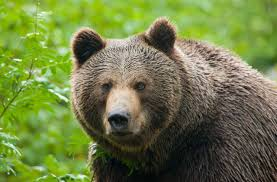
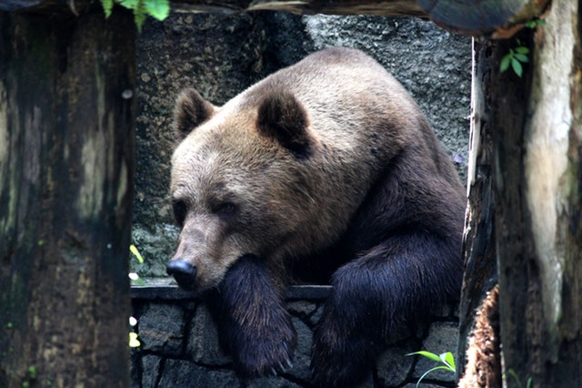
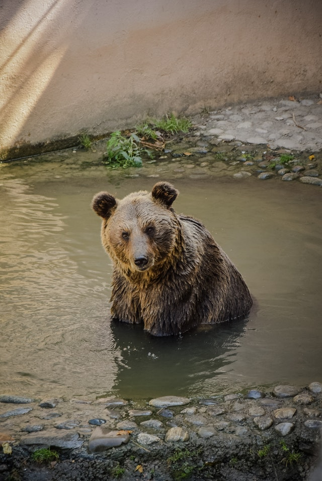
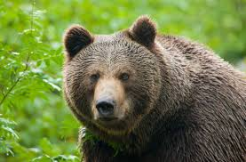
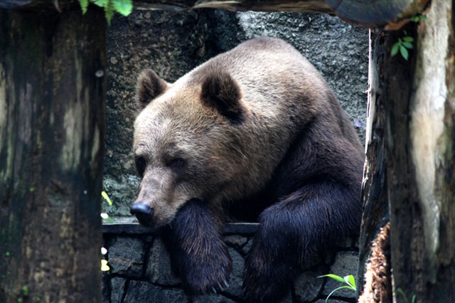
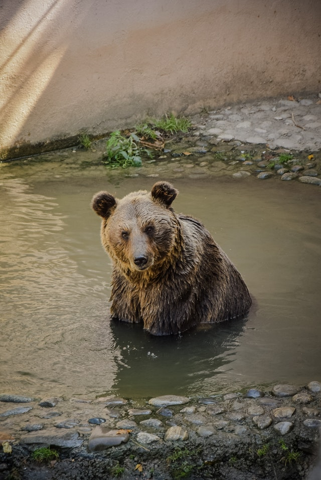

Bears
 





Bears are carnivoran mammals of the family Ursidae. They are classified as caniforms, or doglike carnivorans. Although only eight species of bears are extant, they are widespread, appearing in a wide variety of habitats throughout the Northern Hemisphere and partially in the Southern Hemisphere. Bears are found on the continents of North America, South America, Europe, and Asia. Common characteristics of modern bears include large bodies with stocky legs, long snouts, small rounded ears, shaggy hair, plantigrade paws with five nonretractile claws, and short tails.
While the polar bear is mostly carnivorous, and the giant panda feeds almost entirely on bamboo, the remaining six species are omnivorous with varied diets. With the exception of courting individuals and mothers with their young, bears are typically solitary animals. They may be diurnal or nocturnal and have an excellent sense of smell. Despite their heavy build and awkward gait, they are adept runners, climbers, and swimmers. Bears use shelters, such as caves and logs, as their dens; most species occupy their dens during the winter for a long period of hibernation, up to 100 days.
Bears have been hunted since prehistoric times for their meat and fur; they have been used for bear-baiting and other forms of entertainment, such as being made to dance. With their powerful physical presence, they play a prominent role in the arts,mythology, and other cultural aspects of various human societies. In modern times, bears have come under pressure through encroachment on their habitats and illegal trade in bear parts, including the Asian bile bear market. The IUCN lists six bear species as vulnerable or endangered, and even least concern species, such as the brown bear, are at risk of extirpation in certain countries. The poaching and international trade of these most threatened populations are prohibited, but still ongoing. See Wikipedia for more!